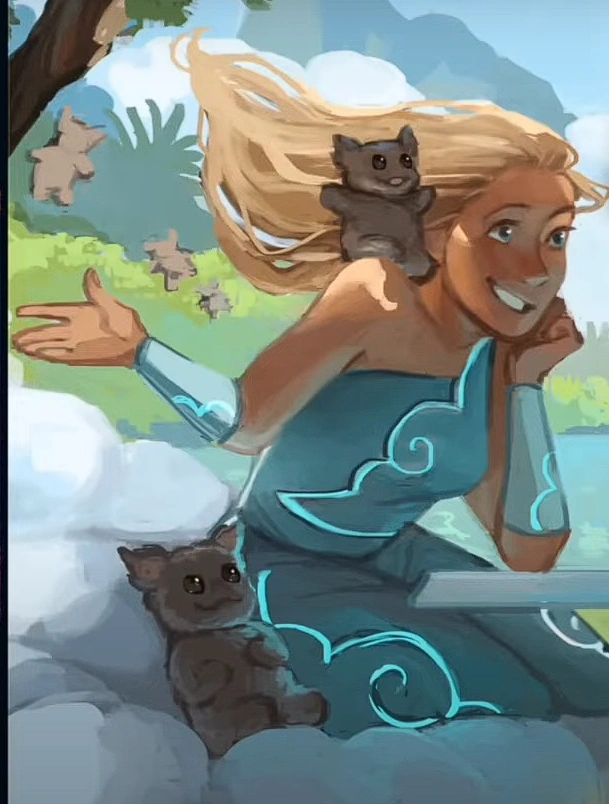

| Aiolos | |
|---|---|
|  | |
| Zeichnung von Giulia Toneatto | |
| Biografie | |
| Titel | Gott des Winds |
| Spitznamen | Großer Windgott |
| Zugehörigkeit | Winions |
| Status | Unsterblich |
| Hinter den Kulissen | |
| Auftritte | Ozean Saga |
| Weisheits Saga | |
| Original Stimme | Kira Stone |
| Deutsche Stimme | Rolle offen |
Aiolos
Halt dir Freunde nah, deine Gegner näher - Aiolos (Halt dir Freunde nah)
Auftritte
-
Ozean Saga
- Halt dir Freunde nah (Debüt)
-
Weisheits Saga
- Liebe im Paradies (Ausschnitt aus Halt dir Freunde nah)
Trivia
-
In der griechischen Mythologie gibt es drei Figuren mit dem Namen "Aiolos", die miteinander verwandt sind,
und nicht alle Quellen stimmen darin überein, wer von ihnen das Amt des Hüters der Winde erhielt (eine
Aufgabe, die manchmal nicht einmal als göttliches Amt angesehen wird).
- Der älteste von ihnen war ein Sohn von Hellen und der Stammvater eines der griechischen Völker.
- Ein anderer Aiolos, der von Homer als Hüter der Winde beschrieben wird, war der Enkel des Vorigen.
- Der dritte und letzte war ein Sohn von Poseidon und Enkel von mindestens einem seiner beiden Namensvettern. Er lehrte die Menschen den Gebrauch von Segeln in der Schifffahrt und das Verständnis der Winde.
- In der griechischen Mythologie herrschte Aiolos sowohl über die sanften als auch über die stürmischen Winde, wobei die letzteren unter Kontrolle gehalten werden mussten. Die Winions (die im Musical als seine Untergebenen auftreten) könnten die Untertanen des Windgottes darstellen, die sowohl süß als auch gefährlich sind und große Entfernungen zurücklegen können (da sie auf mehreren Inseln leben).
- Jorge Rivera-Herrans gab zu, dass er die Tatsache, dass Aeolus auf einer schwimmenden Insel lebte, falsch interpretiert hatte, so dass es sich um eine fliegende Insel im Himmel handelte und nicht um eine, die auf dem Meer schwamm und nicht mit dem Meeresboden verbunden war. Da im Englischen "floating" sowohl schwimmen als auch fliegen heißen kann.
- In der Odyssee jedoch, als die Winde den König von Ithaka auf die schwimmende Insel zurückbrachten, weil der Beutel geöffnet worden war, ließ Aeolus ihn wieder gehen, als er erkannte, dass Odysseus von den Göttern verlassen worden war, und weigerte sich, ihm ein zweites Mal zu helfen.
- Im Musical heißt es, dass Odysseus in das „Land der Titanen“ geschickt wird. In der Odyssee hingegen wird Odysseus von den Winden im Sack auf die Insel des Aiolos zurückgeschickt.
- Die Pronomen von Aiolos wurden von den Fans des Musicals debattiert. Zum jetzigen Zeitpunkt ist keines offiziell bestätigt. Die Debatte bezieht sich in der Regel auf die Verwendung des Pronomens „er“ für Aeolus in Glück geht aus, was jedoch entkräftet wurde, da der eigentliche Text „ask 'em for a hand“ und nicht „ask him for a hand“ lautet. Ein weiterer Punkt, über den in der Regel gestritten wird, ist die Tatsache, dass Aiolos bei mehreren Gelegenheiten als „Gott“ und nicht als „Göttin“ bezeichnet wird. Dies kann jedoch darauf zurückgeführt werden, dass man die Silbenzahl des Liedes nicht verändern wollte, und dass der Begriff „Gott“ manchmal verwendet wird, um sich auf ein Wesen mit höherer Macht zu beziehen, unabhängig vom Geschlecht.